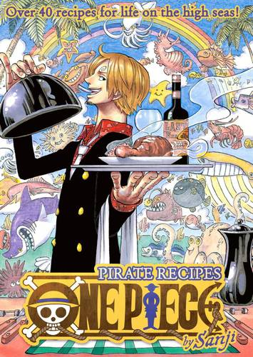

Panini anuncia livro de receitas de One Piece
Quem ficar com água na boca com os pratos que Sanji servir no live-action de One Piece
agora terá a chance de recriar esses banquetes em casa.
A Panini anunciou nesta quinta-feira (31) o lançamento de Livro de Receitas — One Piece,
revista que conta com mais de 40 receitas assinadas pelo cozinheiro dos Chapéu de Palha.